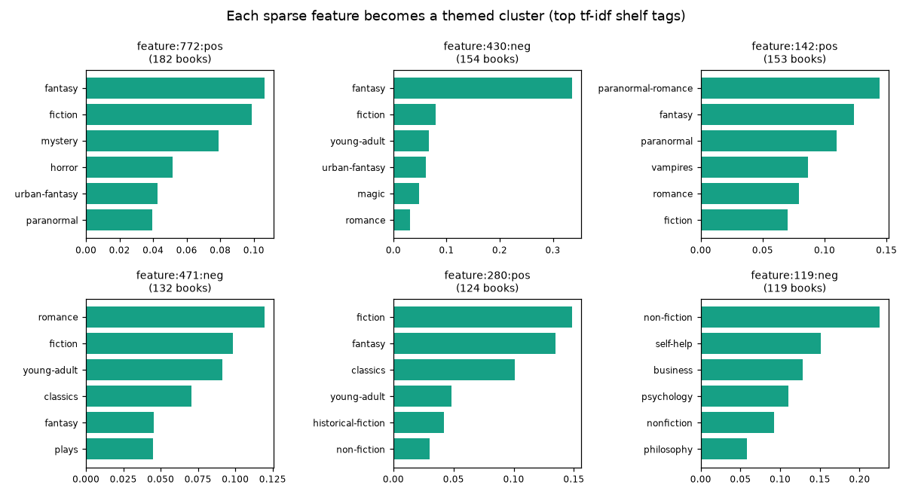
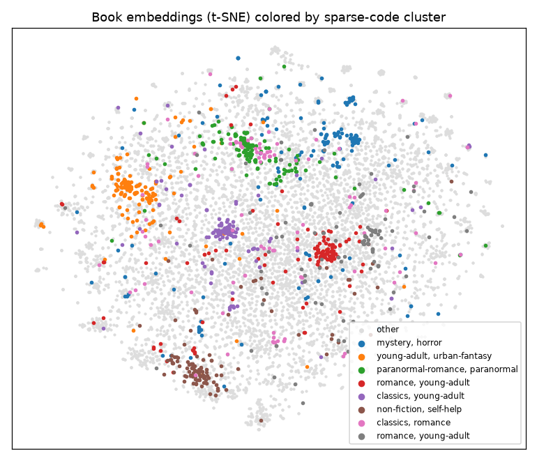
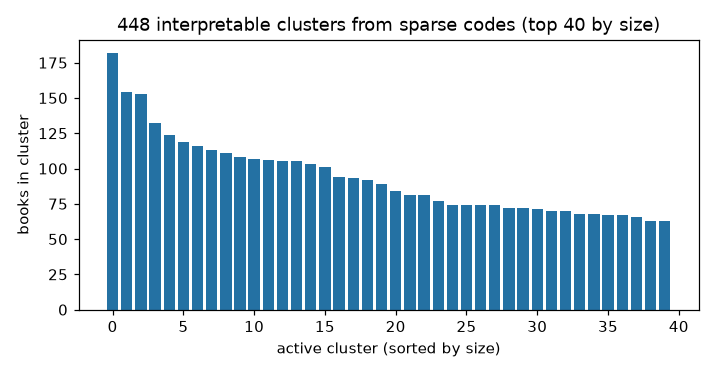

Clustering Sparse Codes
Sparse codes are not just smaller — they are organized. Each row is a short
list of signed features, and rows that share features tend to be semantically
related. compresso.clustering turns that structure into an interpretable
hierarchy of clusters.
This page is a hands-on walkthrough on a real dataset: the
Goodbooks-10k collection of
10,000 books. We embed each book’s text, compress the embeddings into sparse
codes, and cluster the codes into book “themes” — then label those themes with
Goodreads shelf tags. All figures on this page come from docs/gen_figures.py.
The idea
A standard clustering algorithm (k-means, agglomerative) works on dense vectors and asks “which points are close?”. Compresso’s clustering instead works on sparse activation patterns and asks “which entities switch on the same features?”. Because a top-k SAE feature usually corresponds to one concept, a group of entities sharing a feature is a ready-made, explainable cluster — no distance threshold to tune for the first cut, and the cluster comes with the feature(s) that define it.
Step 1 — from text to sparse codes
We start from dense text embeddings (any sentence encoder works) and compress them with a top-k SAE exactly as in Getting Started:
import numpy as np
from sentence_transformers import SentenceTransformer
from compresso import TopKSAEConfig, TopKSAETrainer
# text = ["<title>. by <authors>. <description>", ...] for 10k books
encoder = SentenceTransformer("sentence-transformers/all-MiniLM-L6-v2")
emb = encoder.encode(text, normalize_embeddings=True).astype("float32") # (10000, 384)
srp = TopKSAETrainer(
TopKSAEConfig(hidden_dim=1024, k=32, epochs=80, decay=True, seed=0)
).fit_transform(emb) # (10000, 1024), k=32
(If you persisted codes earlier, srp = load_srp_tensor(...) — see Input and Output.)
Step 2 — build a clustering pipeline
A ClusteringPipeline is an ordered list of steps
applied to the SRPTensor. Each step is a small, named transform, so the
recipe reads top-to-bottom:
import compresso.clustering as cc
clusters = cc.ClusteringPipeline([
cc.TopMSignedClustering(top_m=2, min_cluster_size=10), # 1. seed clusters
cc.EntityContainmentLink(threshold=0.9), # 2. find nested clusters
cc.MaterializeLinkMerges(parent_scope="active"), # 3. merge along those links
cc.PruneRedundantRoots(), # 4. drop subsumed clusters
cc.AssignTags(entity_tag_matrix=tags, tag_names=tag_names, # 5. label with shelf tags
method="tfidf", top_k=8),
cc.SizeFilter(min_cluster_size=15), # 6. keep sizeable clusters
]).fit(srp)
What each stage does:
Clustering (
TopMSignedClustering) seeds clusters from activation patterns: entities are grouped by their top-msigned features, so a feature firing positively and negatively yields two distinct groups. Other seed strategies are available (DominantSignedClustering,ComboSignedClustering,SRPSimilarityClustering).Linking (
EntityContainmentLink) records when one cluster’s members are (almost) a subset of another’s, without merging yet.Materializing (
MaterializeLinkMerges) turns those links into actual parent clusters, building a hierarchy.Pruning (
PruneRedundantRoots) deactivates clusters that are fully contained in a larger active one, so the active frontier is clean.Tagging (
AssignTags) aggregates an entity-tag matrix over each cluster’s members and stores the top tags,"tfidf"down-weighting globally common tags.Filtering (
SizeFilter) keeps only clusters above a size — note this changes the active set; every cluster is still inspectable viaclusters.clusters.
fit returns a SparseClusterSet. Filtered and
merged-away clusters remain in the graph; the ones that matter are the active
frontier, clusters.active_clusters.
Step 3 — the entity-tag matrix (optional labels)
AssignTags is what makes the clusters self-describing. It takes a
(n_entities, n_tags) matrix (dense or SciPy sparse) of tag counts/weights and
the column names. For Goodbooks we build it from the Goodreads shelf tags
(fantasy, self-help, …); any per-entity label source works — genres,
categories, keyword flags. Tags are stored on each cluster as ScoredTag
objects with name, score, and count.
For LLM- or rule-based free-text labels, LabelClusters runs a user-supplied
callback over the clusters; Compresso coordinates the loop but you own the model
and prompt.
What you get
On Goodbooks this yields a few hundred active clusters. Each one corresponds to a sparse feature and lines up with a recognizable book theme — from contemporary romance to self-help to religion:
feature:471:neg n=132 tags=[romance, fiction, young-adult, classics]
e.g. Twilight; Romeo and Juliet; The Notebook
feature:119:neg n=119 tags=[non-fiction, self-help, business, psychology]
e.g. How to Win Friends and Influence People; The Purpose Driven Life
feature:176:neg n=113 tags=[fiction, romance, young-adult, contemporary]
e.g. Me Before You; Never Let Me Go; P.S. I Love You
feature:258:pos n=108 tags=[christian, non-fiction, religion, fiction]
e.g. The Shack; A Prayer for Owen Meany; The God Delusion
The largest themes and their defining shelf tags:
{kind=link}

Crucially, these clusters were found from the sparse codes alone. Projecting the original dense embeddings to 2D and coloring by cluster shows the sparse groups land on coherent regions of the embedding space — the compression kept the semantics:
{kind=link}

{kind=link}

Inspecting clusters
A SparseClusterSet is easy to walk:
for c in sorted(clusters.active_clusters, key=lambda c: -c.entity_count)[:10]:
tags = ", ".join(f"{t.name}:{t.score:.2f}" for t in c.tags[:5])
members = titles[c.entity_indices[:5]] # your own metadata table
print(c.cluster_id, c.entity_count, "|", tags)
print(" ", "; ".join(members))
# the feature(s) that define the cluster:
print(" centroid features:", c.centroid.indices.tolist())
which prints the largest themes, the books in them, and the sparse feature each one is built on:
feature:772:pos 182 | fantasy:0.11, fiction:0.10, mystery:0.08, horror:0.05, urban-fantasy:0.04
World War Z: An Oral History of the Zombie War; Pet Sematary; The Graveyard Book; Speaker for the Dead (Ender's Saga, #2); The Walking Dead, Vol. 01
centroid features: [772]
feature:430:neg 154 | fantasy:0.34, fiction:0.08, young-adult:0.07, urban-fantasy:0.06, magic:0.05
The Night Circus; Ella Enchanted; The Magician's Nephew (Chronicles of Narnia, #6); The Color of Magic (Discworld, #1); The Velveteen Rabbit
centroid features: [430]
feature:142:pos 153 | paranormal-romance:0.14, fantasy:0.12, paranormal:0.11, vampires:0.09, romance:0.08
Dark Places; Sharp Objects; Heart of Darkness; The Subtle Knife (His Dark Materials, #2); Dark Lover (Black Dagger Brotherhood, #1)
centroid features: [142]
Each cluster is defined by a single sparse feature (centroid features), and
its members and shelf tags agree — a self-explaining group, not an opaque
cluster id.
Useful members:
clusters.active_clusters— the current frontier (after pruning/filtering).clusters.clusters— every cluster, including merged/filtered nodes.clusters.cluster_by_id[cid]— look up one cluster.cluster.entity_indices/entity_count— row indices and size.cluster.centroid— the defining sparse feature vector (indices/values).cluster.tags/cluster.label— assigned tags and optional text label.cluster.parent_cluster_ids/child_cluster_ids— hierarchy links.
Saving cluster graphs
Cluster graphs round-trip to disk, so you can compute once and explore later:
from compresso.clustering import save_cluster_graph, load_cluster_graph
save_cluster_graph(clusters, "clusters.json")
clusters = load_cluster_graph("clusters.json")
# or as plain dicts for custom storage:
from compresso.clustering import graph_to_dict, graph_from_dict
payload = graph_to_dict(clusters)
Other building blocks
The pipeline steps are mix-and-match. Besides the seeds and links above, merges
include EntityIoUMerge (Jaccard overlap of members),
CentroidSimilarityMerge, EntityContainmentMerge, and
SemanticSimilarityMerge; AssignUnclusteredToNearestCluster sweeps up
leftovers. A lower-level functional API (cc.cluster_srp(...) and
cc.run_clustering_pipeline(...)) exists for one-call experiments, but the
class-based ClusteringPipeline shown here is the recommended surface.
Note
The clustering API is the most actively developed part of Compresso. The pipeline-and-graph-types surface documented here is the intended entry point; the lower-level builder/merge functions may change.